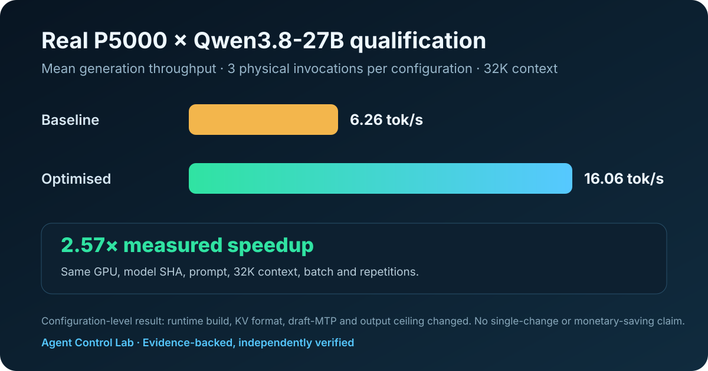

Agent Control Lab · Physical benchmark
Quadro P5000 × Qwen3.8-27B
Two real, governed 32K configurations on the same hardware and immutable model. Every invocation completed and the Work Parcels passed independent verification.

Measured comparison
| Configuration | llama.cpp | KV | Prompt tok/s | Generation tok/s | TTFT | Verification |
|---|---|---|---|---|---|---|
| Baseline | 9371-22d9bc441 | f16 | 115.99 | 6.26 | 19.22 s | PASS |
| Optimised configuration | 9986-91c631b21 | q4_0 | 109.98 | 16.06 | 20.26 s | PASS |
Interpretation boundary
This is an observed configuration-level comparison. It does not attribute the measured change to any single optimisation. Runtime build, KV format, draft-MTP and output ceiling changed. No single-change or monetary-saving claim is made.
Evidence
Qualification: full-gpu-qwen-20260915
Agent Control commit: 98e0f69453182bad1bf52469a7bd34dd43218118
Model SHA-256: 7f3b845b563888ec3abc269474cf744bf703a7ce8766dbb7f696c63975facfd7
Markdown · JSON · CSV · privacy-safe source projection · manifest
Evidence is authoritative. Reports and charts are projections over evidence.